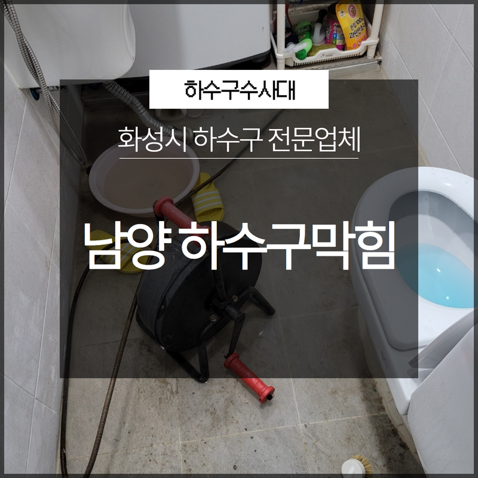
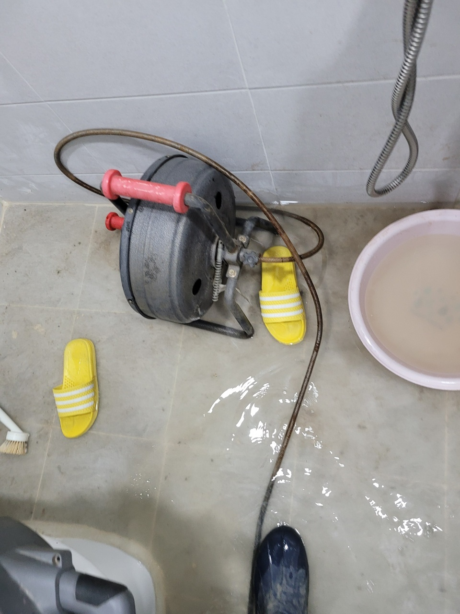
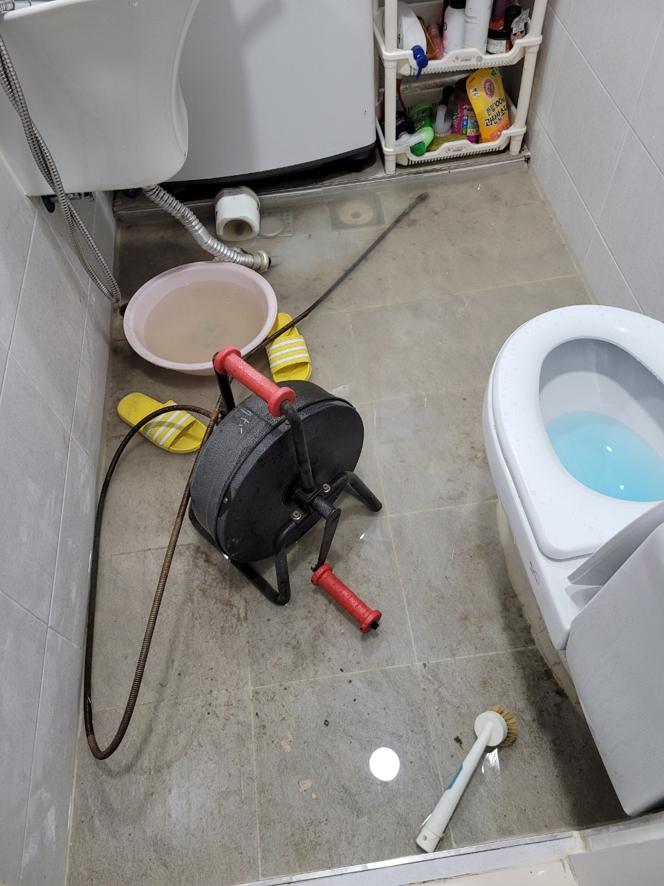
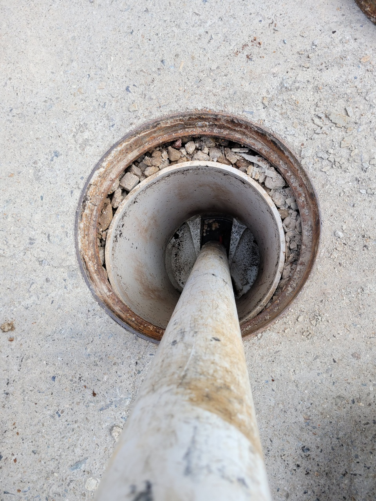
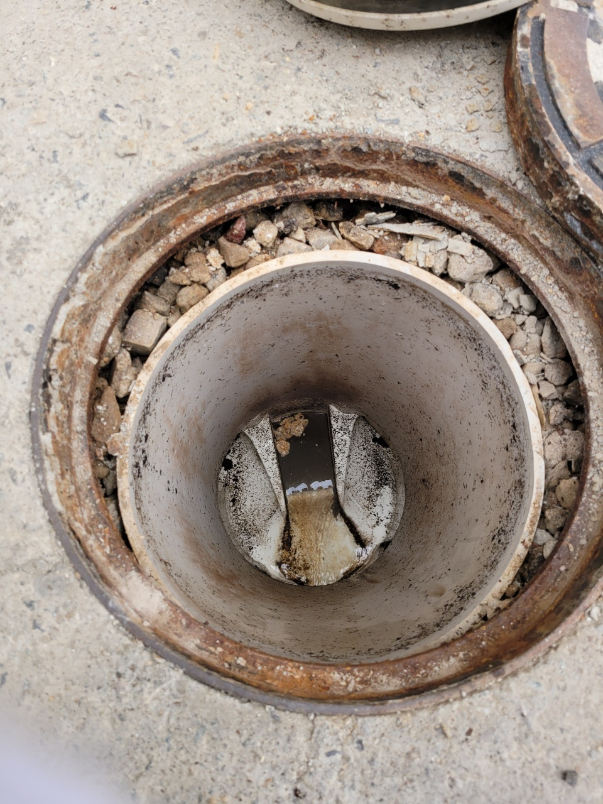
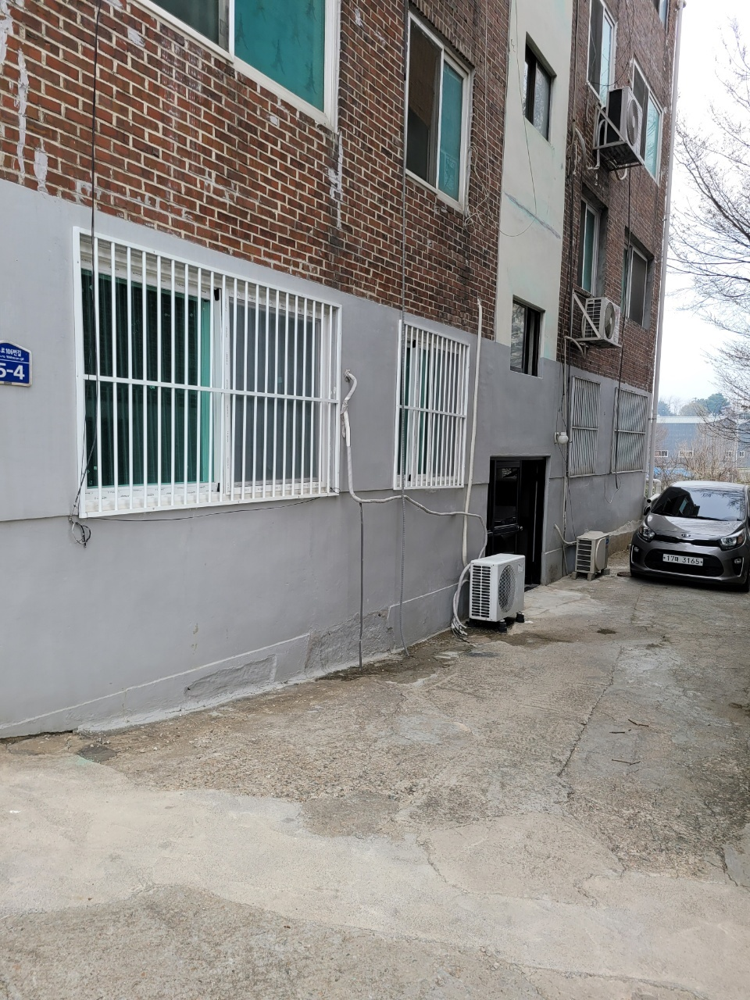
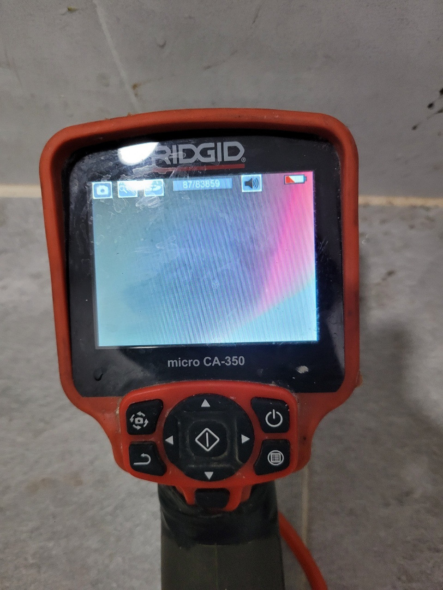

🏠 화성시 남양 조암 하수구막힘 전문업체 시원하게 뚫어드려요!
화성 남양 하수구막힘 전문 시공 후기

📋 작업 개요
- 위치: 화성 남양, 남양, 화성
- 서비스 유형: 하수구막힘, 배관막힘, 역류해결, 뚫는업체, 고압세척
- 작업 일시: 2023. 2. 7. 18:54
- 업체명: 하수구수사대 (010-5615-2118)
🔍 문제 상황
안녕하세요. 하수구 수사대입니다 반갑습니다
오늘은 화성시 남양 조암 하수구막힘 전문업체
하수구 막힘 현장 방문 후기를 안내해 드리겠습니다.
하수구는 일상생활을 하다가 갑작스럽게 막히는 경우가 대부분입니다. 미리 알려준다면 좋겠지만 사실상 불가능합니다. 막힌 하수구를 시원하게 뚫는다는 것은 결코 쉬운 일이 아니기에 이럴 때는 화성시 남양 조암 하수구막힘 전문업체를 통해 해결하시는 것을 권해드립니다.

🔎 원인 분석
💡 전문가 진단: 오늘은 화성시 남양 조암 하수구막힘 전문업체 하수구 막힘 현장 방문 후기를 안내해 드리겠습니다.
어떤 업체를 선정해야 할지 고민이 되신다면 오늘 현장 작업 사례를 참고하시어 선택하시는데 작은 도움이나마 되셨으면 합니다. 막힘 현상의 문제가 외부의 이물질이 대량 쌓여 있는 곳에서 발생하였다면 문제는 조금 더 심각한 상황일 수 있겠습니다.
자영업을 운영하시는 대표님께서 식당 내 하수구 막힘 현상으로 정상적인 영업이 어렵다고 난감해하시면서 연락 주셔서 현장을 직접 방문하게 되었습니다. 현장을 확인해 보니 하수구 막힘 현상으로 배수가 되지 못하고 있었고 아주 느리게 내려가는 상황이었습니다. 이번 현장처럼 막힘 정도 상황이 심각하게 발생하였다만 화성시 남양 조암 하수구막힘 전문업체에 의뢰하셔서 꼼꼼한 작업을 확실하게 진행하셔야지 하수구 막힘이 재발생하지 않습니다.
하수구 막힘 현상이 발생한 것을 확인하셨다면
그 즉시 해결책을 찾아야 빠른 조치가 가능합니다. 이번 작업 현장은 셀프로 해결해 보려고 노력하시다 스스로 해결이 불가능하니 며칠 동안 방치하다 급히 연락을 주셔서 상황이 심각하였습니다. 일단 내부 이물질 제거를 위해 하수구에 석션기를 투입하여 상황을 파악하기로 했습니다.
장비 앞부분에 딱딱한게 걸리는 것이 느껴져 석션기를 통해 확인해 보니 배관에 오랫동안 쌓여있던 이물질로 확인되었고 많은 이물질로 하수구가 덮여있어 역류 현상과 더불어 심한 악취까지 동반되고 있었습니다. 식당의 하수구이다 보니 음식물 찌꺼기 발생이 많아져 하수구가 막힌 것으로 파악되었습니다.

🔧 작업 과정
막혀있는 하수구에 이물질을 석션기를 통해 제거하더라도 잔여 이물질이 남을 수 있기 때문에 꼼꼼한 작업이 필요합니다. 석션 작업 이후에는 내시경 카메라, 플렉스 샤프트를 이용한 고압세척을 통해서 막힌 현장을 확실하게 제거해 주셔야 이물질이 남지 않습니다.
석션 투입 이후 내시경을 통해 배관 내부를 카메라 확인했습니다.
식당과 같은 업장을 운영하시는 곳은 이렇게 하수구 막힘 현상이 상당한 곳이 많습니다. 이럴 때에는 화성시 남양 조암 하수구막힘 전문업체를 통해 완벽한 제거의 도움이 필요합니다. 슬러지가 많은 경우에는 더욱이 확실한 작업 진행이 필요합니다. 내시경 카메라를 통해 배관 내부의 이물질을
실시간으로 확인하였고, 외부 하수구까지 막혀있는 모습을 발견하여 플렉스 샤프트기를 통해 해결 방법을 모색하였습니다.
샤프트기 헤드에 내시경이 달려있어 카메라를 고객님과 함께 확인하면서 샤프트기 작업을 동시에 진행하여 막힘 현상이 재발하지 않도록 꼼꼼한 작업을 진행해 드렸습니다. 이물질을 플렉스 샤프트기를 이용해 자잘하게 분쇄하였고 석션기로 조각들을 흡입하는 형태로 내부에 잔여물이 남지 않도록 깨끗하게 제거 작업을 도와드렸습니다.
하수구는 평소에 이물질이 쌓이지 않도록 세심한 관리가 필요합니다.
기름때와 이물질이 쌓여 물이 내려가지 않고 악취가 심했던 것입니다. 식당과 같은 업장은 빠른 작업 진행 후 해결책을 마련해 드려야지 식당 운영에 차질이 없기 때문에 현장에 빠르게 방문해 드려 전문 장비로 깨끗하게 처리를 해드렸습니다. 작업 완료 후 내시경 카메라를 통해 깨끗하게 작업된 배관을 확인해 드렸고, 사후 관리법과 예방법까지 안내해 드렸습니다.


✅ 작업 완료
하수구 막힘 현상 발생으로 고생하시는 분들은 화성시 남양 조암 하수구막힘 전문업체 하수구 수사대를 통해
완벽한 해결의 도움을 받으시기 바라겠습니다.




⚠️ 하수구 배관 막힘 예방 및 관리 가이드
- ✅ 머리카락, 비닐, 물티슈 등 물에 분해되지 않는 이물질은 하수구 유입을 절대 금지해 주세요.
- ✅ 하수구 거름망을 씌우고 모여진 이물질은 주기적으로 쓰레기통에 바로 비워주셔야 합니다.
- ✅ 배관 노후가 심할 경우 이물질이 더 쉽게 걸리므로 주기적인 배관 세척(고압세척 등)을 권장합니다.
- ✅ 작업 후 1년 이내 재발 시 하수구수사대에서 무상 A/S 보증 서비스를 제공합니다.
💡 핵심 정리
- 확실한 장비 작업(내시경 점검 및 샤프트 스케일링)으로 원인을 뿌리 뽑습니다.
- 작업 후 1년 이내에 동일한 부위 재발 시 100% 무상 A/S 서비스를 보장합니다.
- 서울 · 경기 · 인천 전 지역에 24시간 언제든 긴급 출동할 수 있도록 항시 대기 중입니다.
❓ 자주 묻는 질문 (FAQ)
🚨 화성 남양 하수구막힘 문제로 고민이신가요?
정확한 원인 진단과 확실한 시공으로 재발 없는 해결을 약속드립니다.
24시간 긴급 출동 | 서울 · 경기 · 인천 전지역 | 1년 내 재발 시 무상 A/S